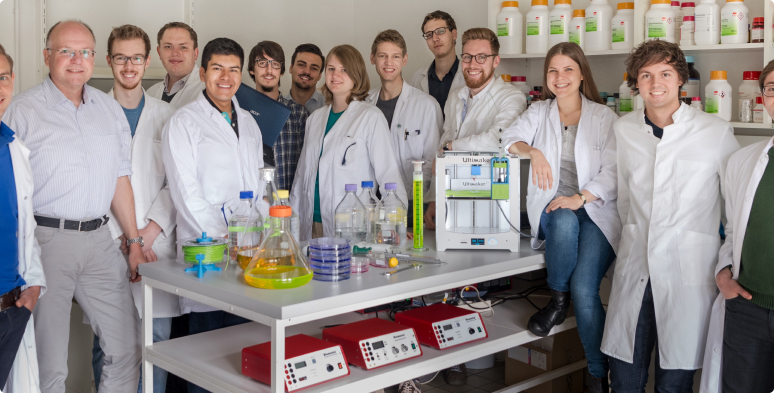
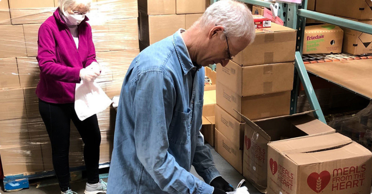
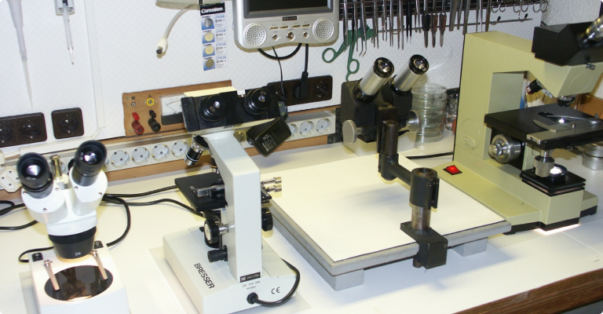
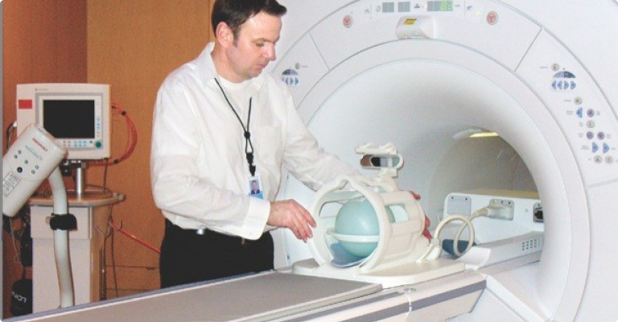
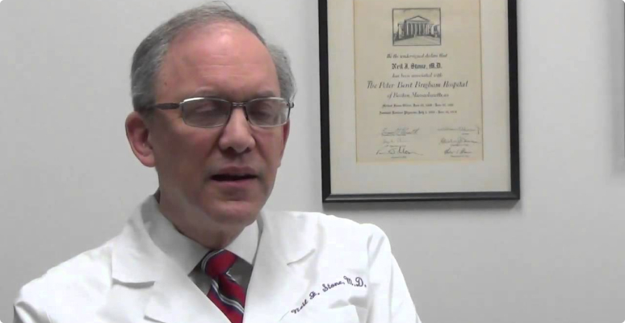
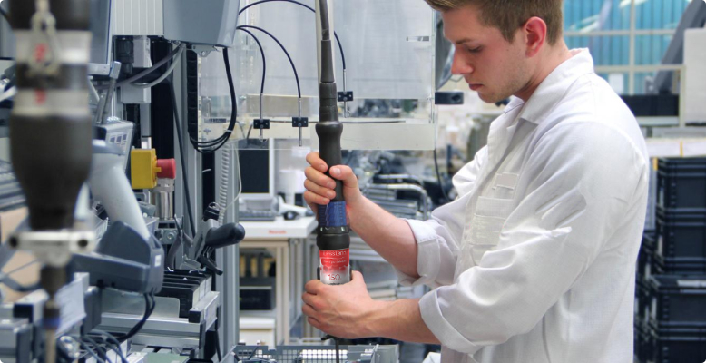
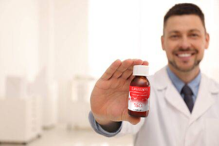
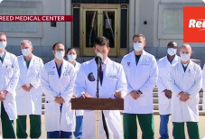

25 октября 2020.
Исследование, которое опровергло все, что мы знали о сосудах. Новый препарат поможет навсегда справиться с проблемой повышенного холестерина.
Доктор Нейл Стоун (Dr. Neil Stone), профессор Медицинской школы Фейнберга Северозападного университета (Northwestern University Feinberg School of Medicine).
Сегодня я расскажу, как мы совершили революцию во флебологии и кардиологии.
Здравствуйте, уважаемые коллеги и гости моего блога!
Наконец-то завершилось исследование – и теперь я могу рассказать вам о том, как мы сделали наше удивительное открытие.
Как вы уже знаете, мы занимались исследованием механизма образования холестерина и его влияния на наше здоровье. Но что мы знали о холестерине раньше?
Холестерин: вред или польза?
Открыв холестерин, мы объявили его безусловно вредным для нашего здоровья. Он откладывается во внутренней оболочке крупных артерий: аорты, артерий головного мозга, сердца, почек. Эти скопления холестерина превращаются в бляшки, которые мешают кровоснабжению.

Отложения холестерина образуют скопления, которые серьезно угрожают вашему здоровью
Затем мы поняли, что холестерин нужен нашему организму. Ведь он входит в состав биологических мембран клеток, необходим для выработки витамина D и гормонов, а также работы нервных волокон.
Так мы узнали, что холестерин бывает не только «плохим», но и «хорошим» – в зависимости от того, как он переносится и откладывается ли на стенках сосудов. Остался один вопрос – как же сохранять его баланс? И вот тут мнения ученых разошлись.
Одни утверждали, что это зависит от генетики, другие винили питание и экологию, третьи говорили, что бляшки – следствие сопутствующих заболеваний. Появилось множество мифов: например, что весь холестерин полезен или что лекарства не могут влиять на его уровень. Мы накопили массу данных, противоречащих друг другу. Пришла пора разобраться в этом вопросе.
Первый этап: удивительное открытие
В 2015 году под моим руководством собралась группа ученых, в которую вошли специалисты из Коллегии кардиологов (American College of Cardiology), Ассоциации сердца (American Heart Association), а также Общества клеточной биологии (The American Society for Cell Biology).
Первый день работы над проектом, мы полны энтузиазма
Мы организовали отдельную лабораторию, оборудовали приемные кабинеты, наладили программный комплекс анализа данных и отобрали пациентов в наше исследование.
Мне не хватит и целой книги, чтобы описать все бессонные ночи, которые мы проводили над микроскопами и экранами мониторов. Это была сложная и кропотливая работа, результаты которой постоянно перепроверялись. Все этапы подробно описаны в наших публикациях на PubMed и Journal of the American College of Cardiology.
Нам понадобилось три года, чтобы изучить процесс образования и транспортировки холестерина. Тысячи часов работы, сотни исследований, более пятидесяти научных статей, более десятка кандидатских и докторских диссертаций… Теперь мы знали о холестерине все!

Наша первая лаборатория — потом нам понадобилось помещение побольше
Одна из групп, участвующих в нашем исследовании
Медики работали по 12 часов в день: обследовали испытуемых, беседовали с ними, фиксировали данные
Как оказалось, организму нужно гораздо меньше холестерина, чем мы думали раньше. Но самое главное – мы обнаружили 7 безвредных для человека соединений, которые предположительно могут связывать лишний холестерин и изменять его структуру. Такой холестерин просто не может прикрепляться к стенкам сосудов – и будет самостоятельно выводиться из организма. Конечно, это были лишь предположения, но какие открывались перспективы!
Вот так фундаментальное исследование превратилось в прикладное: мы собрались создать лекарство от «плохого» холестерина!
Второй этап: лекарство, которое изменит мир
Перед вторым этапом нужно было обосновать необходимость нашего исследования. Ведь мы не смогли бы обойтись без дополнительного финансирования.
Для аргументации мы использовали полученные ранее данные:
- Каждый пятый человек в мире страдает от сердечно-сосудистых заболеваний.
- 80% этих заболеваний обусловлены дисбалансом холестерина в организме.
- Его избыток незаметен, симптомы появляются, когда организм серьезно поврежден.
- 65% населения планеты имеют отклонения в уровне холестерина.
- Баланс холестерина зависит от многих факторов и его нарушение нельзя предугадать.
- Он накапливается с возрастом, независимо от генетики и образа жизни.
- Если холестерин отложился в сосудах, организм физически не может вывести его самостоятельно.
Основные последствия закупорки сосудов:
Инфаркт миокарда;
Инсульт мозга;
Развитие варикоза;
Стенокардия;

Недостаточность мозгового кровообращения;
Отеки и снижение кровообращения конечностей;

Снижение иммунитета и активности лейкоцитов;
Обострение сопутствующих заболеваний.
Нам повезло, Всемирная организация здравоохранения была готова содействовать нам во всем. Всего за несколько месяцев мы собрали необходимую базу и начали новый этап исследований.
  Только на установку оборудования мы потратили несколько недель
Одно за другим мы проводили испытания найденных веществ – и ни одно из них не давало желаемых результатов! Только четвертое соединение, наконец, подарило надежду – оно действительно растворяет холестерин, не связываясь с другими компонентами крови. Но синтезировать его было очень дорого. По предварительным подсчетам, нужно было создавать под него отдельное производство или тратить огромные суммы на переоборудование заводов. Так или иначе, упаковка готового препарата стоила бы не менее 500$!
Тогда мы решили обратиться за помощью к природе – и найти это соединение в готовом виде! Мы отправили запросы в фармакологические компании, которые занимаются производством лекарств на основе натуральных компонентов.
Два месяца мы ждали ответ… и, наконец, письмо пришло – и принесло настоящий праздник в нашу исследовательскую группу! Одна из компаний не просто нашла нужные растения, но также предложила организовать производство лекарства – и стоимость пачки в розницу не должна была превысить 50$!
Мы решили назвать лекарство Lessterin – в честь нашего коллеги Лестера Брауна (Lester Brown), который открыл его действующее вещество. Самой эффективной формой приема оказались капли – они усваивались гораздо эффективнее, чем таблетки или инъекции.

Первый синтезированный образец Lessterin
Третий этап: результаты, в которые трудно поверить
Настал этап клинических испытаний. Часть из них мы проводили сами, другую часть передали доверенным клиникам – чтобы обеспечить полный контроль и многократную перепроверку.
Данные нас просто поразили!
Испытуемые были разбиты на 3 группы – в зависимости от уровня холестерина и влияния, которое он оказал на организм. Первый этап исследования продлился два месяца, после чего мы подвели первые итоги:
Результаты группы №3 (серьезные симптомы).
- 83% пациентов – уровень холестерина в крови снизился более, чем на 30%.
- 78% пациентов – размер бляшек уменьшился на 30-50%.
- 85% пациентов – сердечный ритм пришел в норму.
- 71% пациентов – улучшились когнитивные функции.
- 55% пациентов – уменьшились отеки на руках и ногах.
- 69% пациентов – повысился иммунный ответ организма.
Результаты группы №2 (умеренные симптомы).
- 74% пациентов – уровень холестерина в крови снизился более, чем на 30%.
- 70% пациентов – размер бляшек уменьшился на 30-50%.
- 87% пациентов – сердечный ритм пришел в норму.
- 75% пациентов – улучшились когнитивные функции.
- 67% пациентов – уменьшились отеки на руках и ногах.
- 73% пациентов – повысился иммунный ответ организма.
Результаты группы №1 (повышенный уровень холестерина, без симптомов).
- 42% пациентов – уровень холестерина в крови снизился более, чем на 30%.
- 71% пациентов – улучшились когнитивные функции.
- 73% пациентов – повысился иммунный ответ организма.
Чтобы собрать достаточно данных, мы провели серьезную работу
Как мы видим, действие Lessterin особенно явно проявилось в 3-й группе. Это связано с тем, что у пациентов именно в этой группе количество холестериновых отложений самое высокое – соответственно, и результаты более заметны. Однако вне зависимости от стадии болезни испытуемых, результаты Lessterin превосходили все, что мы видели до этого!
Более того, созданные нами капли прекрасно подходят для профилактики – ведь они не имеют побочных эффектов! Мы наблюдали испытуемых на протяжении полугода после окончания исследования. Международные медицинские организации, которые курировали наш проект, следят за их состоянием до сих пор.
За все это время не было получено никаких негативных данных! Состояние пациентов улучшилось и остается стабильным!
Как мы меняем медицинский мир
Оформив все необходимые документы, мы запатентовали свою разработку и передали ее в производство. Буквально за последний месяц мы пережили несколько скандалов – другие компании пытались воспроизвести нашу формулу или создать ее аналог. Но пока что это никому не удалось. При этом мы всегда открыты для сотрудничества, но придерживаемся принципиальной позиции – Lessterin не должен стоить дорого! И мы сделаем все, чтобы не допустить повышение цены на него.
Наконец-то держу в руках долгожданный патент
Мы продолжаем представлять нашу разработку на медицинских конференциях и выставках. Сейчас Lessterin участвует в нескольких международных программах, позволяющих людям разных стран проходить курс лечения и профилактику.
Пусть это будет нашим подарком человечеству!
Первый образец Lessterin сошел с конвейера — и скоро отправится менять мир!
P.S. Дорогие читатели, по вашим многочисленным просьбам, размещаю информацию о том, где можно приобрести капли:
Официальный сайт Lessterin в России находится тут.Обратите внимание! Оригинальный препарат действительно продается в вашей стране только через интернет – чтобы избежать наценки аптечных сетей!
Остерегайтесь подделок и берегите себя!
Комментарии: 20 комментариев за сегодня
Д-р Нейл Стоун
Конечно, я вас помню, Анна! Как ваше самочувствие? Надеюсь, вы продолжаете лечение?
20 минут назад
Анна Шварц
Просто прекрасно, доктор! Да, принимаю повторный курс — купила Lessterin через интернет! Спасибо вам огромное за вашу помощь!!
20 минут назад
Вадим Миронов
Сколько же я мучился со своими холестериновыми бляшками! Все настолько плохо, что если бы я участвовал в вашем исследовании, для меня бы создали отдельную группу… Никто из врачей так и не может помочь — говорят, что нужна операция. А я против операций! Закажу ваше средство, пожалуй — может, поможет.
час назад
Д-р Нейл Стоун
Уважаемый Вадим! Прошу вас не отказываться от операции! Ведь Lessterin — это современный эффективный препарат, но не панацея! Если дело зашло так далеко, что вам требуется оперативное вмешательство — пройдите его, чтобы исключить угрозу жизни! А после этого вы можете принимать капли для профилактики и быстрого восстановления! Это я вам говорю как врач и как человек — не рискуйте своей жизнью! Понимаю, что операция — это страшно. Но страшнее последствия, если ее не провести! Прошу, берегите себя!
час назад
Вадим Миронов
Знали бы вы, как я не хочу этого делать... Но спасибо за ваш ответ! Как хорошо, что есть врачи, которые так искренне хотят помочь людям. Пожалуй, я послушаю ваш совет. Но капли закажу сразу — пусть будут :)
час назад
Вадим Миронов
Доктор Стоун написал в своей статье: они делают все, чтобы цена препарата была низкой. Если производство недорогое, то почему она должна быть высокой? Знаете, не все думают только о прибыли…
час назад
Янина Князева
Доктор Стоун точно не относится к меркантильным людям! Это не первая программа, в которой он участвует и борется за доступность лекарств для обычных людей!
час назад
Константин Самойлов
Спасибо вам, доктор! Благодаря вашей разработке я почти справился со своей болезнью! Огромная бляшка была на стенке сосуда, ведущего прямо к сердцу! Операцию делать было нельзя — я очень плохо переношу наркоз! Все, что мне оставалось — просто ждать своей участи… Но благодаря вашей разработке я жив и счастлив!
час назад
Марк Батурин
Моя жена принимала Lessterin для профилактики. Действительно, как будто помолодела. Я решил тоже пропить курс — и почувствовал на себе… это просто поразительно. Я не уверен, но кажется на сосудах правда положительно сказалось… если вы понимаете о чем я ;))
час назад

Александра Игнатьева
Читала отзывы и поняла, что надо подумать о своем здоровье. Зашла случайно — стало интересно почитать, что там ученые изобрели. А теперь думаю, а почему бы не купить? Профилактика не помешает, тем более, за такую цену :)
час назад
Анастасия Корнеева
Вы не поверите, но проблемы с холестерином бывают и у совсем молодых! За два года я изменилась кардинально! Только посмотрите на фото! Мне всего 25 — и уже все сосуды в бляшках. Остановить процесс не помогает ничего! Боюсь, что к 30 просто окажусь на операционном столе!! Пожалуйста, доктор, ответьте, в моем возрасте можно принимать ваше средство?
час назад
Д-р Нейл Стоун
Уважаемая Анастасия! Lessterin можно принимать в любом возрасте! Я в любом случае рекомендую вам пройти полное обследование, но попутно вы можете начать принимать капли. Здоровья вам, берегите себя!
час назад
Анатолий Камицкий
Реклама! Не ожидал этого от такого уважаемого интернет-издания! Не первый год вас читаю — и тут такое! Я просто не могу передать, как вы меня разочаровали!
час назад
Д-р Нейл Стоун
Уважаемый Анатолий! Да, возможно, я рекламирую Lessterin. Но лишь потому, что в нем уверен! К тому же, я не знаю, как мне рассказать о нашем исследовании, не назвав препарат. Сначала я даже адрес сайта не давал — я сделал это лишь после того, как меня просто засыпали вопросами, где его купить. В любом случае, судя по вашей реакции, вам средство для борьбы с холестерином не нужно. Но если вдруг понадобятся — знайте, что мы его уже создали. Здоровья вам, берегите себя!
час назад

Похожие публикации
Повышенный холестерин провоцирует появление новообразований
Последние новости:
Начались клинические испытания препарата для лечения гиперхо- лестеринемии
Медицинский скандал:
Медицинский скандал: отозваны результаты исследования, доказывающего безвредность холестерина
Американская коллегия кардиологов разработала новую медицинскую программу
Профессор Харуми Окуяма: Новое открытие полностью изменит кардиологию!
Нэнси Браун: Lessterin увеличит среднюю продолжительность жизни на 20 лет!
Запатентовано лекарство для контроля уровня холестерина. Медики требуют сделать его достоянием человечества.
Анна Шварц
Я участвовала в этой программе! Возможно, вы меня помните, я была в 3-й группе! Вы еще говорили, что у меня самые поразительные результаты!
20 минут назад